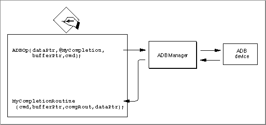

Using the ADB Manager
You can use the ADB Manager to communicate with and get information about devices attached to the Apple Desktop Bus. In general, applications interact with the ADB indirectly, by calling the Event Manager to retrieve information about user actions on the available input devices (keyboard, mouse, graphics tablet, and so forth). As a result, most applications do not need to know how to communicate directly with ADB devices, or even whether the ADB is present on the computer.Some applications--such as diagnostic programs or other utilities--might want to report information about the ADB. Other software might even need to send commands directly to an ADB device (perhaps to query or modify device settings). This section shows how to
For information on writing and installing ADB device handlers, see "Writing an ADB Device Handler" on page 5-29.
- determine whether the ADB Manager is present on the current computer
- get information about the devices attached to the ADB
- send commands to an ADB device in order to determine or modify device settings
Checking for the ADB Manager
The Apple Desktop Bus was introduced on the Macintosh II and Macintosh SE computers. To test for the availability of the ADB Manager on your system, use theNGetTrapAddressfunction to see if the_CountADBstrap macro is available. See the chapter "Trap Manager" in Inside Macintosh: Operating System Utilities for information about theNGetTrapAddressfunction.Getting Information About ADB Devices
You can use the ADB Manager to get several kinds of information about the ADB and about individual ADB devices on the bus. You can callCountADBsto determine how many devices are currently available on the Apple Desktop Bus. TheCountADBsfunction simply counts the number of entries in the ADB device table.You can call the
GetIndADBfunction to get information about a device specified by its index in the ADB device table. TheGetIndADBfunction returns as its function result the current ADB address of the device with the specified index and also returns additional information in a parameter block pointed to by one of its parameters. If you already know the address of an ADB device, you can callGetADBInfoto get that same information about the device.Both
GetIndADBandGetADBInforeturn information about a particular device in an ADB data block, defined by the ADBDataBlock data type.TYPE ADBDataBlock = PACKED RECORD devType: SignedByte; {device handler ID} origADBAddr: SignedByte; {default ADB device address} dbServiceRtPtr: Ptr; {pointer to device handler} dbDataAreaAddr: Ptr; {pointer to data area} END;You can examine the
- Note
- The installation code for a device handler can set information (specifically the address of its device handler and optional data area) in its device's entry in the device table using the
SetADBInfofunction.
devTypeandorigADBAddrfields of theADBDatablock to determine what kind of ADB device is located at a particular ADB address. (Remember that once the ADB Manager has set the initial values for an ADB device in the ADB device table, it updates the device table entry for the device to reflect changes only to the address of the device handle routine and data area pointer. Thus,GetIndADBandGetADBInforeturn the device's original device handler ID and original (default) ADB device address.) For example, the Apple Extended keyboard has a device handler ID of $02 and a default address of $2. Listing 5-1 shows one way to determine whether an ADB device is an Apple Extended keyboard.Listing 5-1 Determining whether an ADB device is an Apple Extended keyboard
FUNCTION IsExtendedKeyboard (myAddress: ADBAddress): Boolean; VAR myInfo: ADBDataBlock; myCommand: Integer; myErr: OSErr; CONST kExtKeyboardAddr = 2; kExtKeyboardOrigHandlerID = 2; BEGIN myErr := GetADBInfo(myInfo, myAddress); IsExtendedKeyboard := (myInfo.origADBAddr = kExtKeyboardAddr) AND (myInfo.devType = kExtKeyboardOrigHandlerID); END;TheIsExtendedKeyboardfunction defined in Listing 5-1 is used later in this chapter, in Listing 5-5 on page 5-28.Communicating With ADB Devices
You can use the ADB Manager to communicate directly with ADB devices by sending ADB commands to those devices. In general, however, you don't need to do this, because the ADB Manager automatically polls for input from the connected ADB devices and passes any data received from a device to the device's device handler. Most applications should never interact directly with ADB devices, and even ADB device handlers need to do so only occasionally (for instance, to read or set device parameters stored in the device registers).If you do need to send ADB commands directly to a device, you can do so using the
ADBOpfunction. TheADBOpfunction transmits over the bus a command byte, whose structure is shown in Figure 5-2 on page 5-8 and Figure 5-3 on page 5-8. The command (Talk, Listen, Flush, and SendReset) and any register information are encoded into an integer that is passed toADBOp. You also passADBOpthree pointers:The
- A pointer to the optional data area used by the completion routine.
- A pointer to a completion routine. This routine is executed once the command byte has been sent to the ADB device.
- A pointer to a Pascal string (maximum 8 bytes data preceded by one length byte). The first byte specifies the length of the string and the remaining bytes (if any) contain data to be sent to the device or provide storage for the data to be received from the device.
ADBOpfunction is always executed asynchronously. If the bus is busy, the ADB command passed toADBOpis held in a command queue until the bus is free. If your application requires synchronous behavior, you'll need to use a completion routine to determine when the ADB command itself has completed. Figure 5-11 shows the relationships between theADBOproutine, the device to which it is directly communicating, the ADB Manager, and an ADB completion routine.Figure 5-11 The
ADBOproutine and an ADB completion routine
Listing 5-2 shows a way to send ADB commands synchronously.
Listing 5-2 Sending an ADB command synchronously
PROCEDURE MySetFlag; {move a nonzero value into the word pointed to by register A2} INLINE $34BC, $FFFF; {MOVE.W #$FFFF, (A2)} PROCEDURE MyCompletionRoutine; BEGIN MySetFlag; {set a flag to indicate done} END; FUNCTION MySendADBCommand (myBufferPtr: Ptr; myCommand: Integer): OSErr; {send a command to an ADB device synchronously} VAR myDone: Integer; {completion flag} myErr: OSErr; BEGIN myDone := 0; myErr := ADBOp(@myDone, @MyCompletionRoutine, myBufferPtr, myCommand); IF myErr = noErr THEN REPEAT UNTIL myDone <> 0; ELSE ; {ADB buffer overflowed -- retry command here} MySendADBCommand := myErr; END;TheMySendADBCommandfunction sets the completion flagmyDoneto zero and then callsADBOp, passing the address of that completion flag and the address of a completion routine along with the two parameters passed toMySendADBCommand. The completion routine simply calls an inline assembly routine that moves a nonzero value into the word pointed to by register A2. (When the completion routine is called, register A2 points to the optional data area, in this case, to themyDonevariable.) TheMySendADBCommandfunction waits until the value of themyDonevariable changes, and then returns.Rather than provide a completion routine to verify that a Talk command has completed, you can initialize the first byte of the data buffer to 0 before sending the command. The first byte of the data buffer contains the length of the buffer (in the same manner that the first byte of a Pascal string contains the length of the string). The data buffer can include from 0 to 8 bytes of information. After sending the command with
ADBOp, you can then test the first byte of the data buffer to determine whether the command has completed. Once the first byte of information contains a nonzero value, then the command has completed, and the first byte of the buffer indicates the number of bytes returned by the ADB device.Listing 5-3, Listing 5-4, and Listing 5-5 illustrate how to use the
MySendADBCommandfunction (defined in Listing 5-2) to blink the LED lights on the Apple Extended keyboard. The Apple Extended keyboard maintains the current setting of the LED lights in the lower 3 bits of device register 2. You can read the current light setting by issuing a Talk command to the keyboard, as shown in Listing 5-3.Listing 5-3 Reading the current state of the LED lights
VAR gRegisterData: PACKED ARRAY[0..8] of Byte; {buffer for register data} CONST kListenMask = 8; {masks for ADB commands} kTalkMask = 12; kLEDRegister = 2; {register containing LED settings} kLEDValueMask = 7; {mask for bits containing current LED setting} FUNCTION MyGetLEDValue (myAddress: ADBAddress; VAR myLEDValue: Integer) : OSErr; VAR myCommand: Integer; myErr: OSErr; BEGIN {initialize length of buffer; on return, the ADB device sets } gRegisterData[0] := Byte(0); { this byte to the number of bytes returned} {get existing register contents with a Talk command} myCommand := (myAddress * 16) + kTalkMask + kLEDRegister; myErr := MySendADBCommand(@gRegisterData, myCommand); IF myErr = noErr THEN {make sure completed successfuly} {gRegisterData now contains the existing data in device register 2; } { the lower 3 bits of byte 2 contain the LED value} myLEDValue := Integer(BAND(gRegisterData[2], kLEDValueMask)) ELSE myLEDValue := 0; MyGetLEDValue := myErr; END;The MyGetLEDValue function constructs a Talk Register 2 command by adding the address value to command and register masks defined by the application. Then it calls the MySendADBCommand function to communicate with the device at the specified address. If MySendADBCommand completes successfully, then the gRegisterData variable contains (in array elements 1 and 2) the two-byte value in device register 2. Only the lower 3 bits of that value are used for the LED settings. If one of those bits is set, the corresponding light is off. Note that ifMyGetLedValuereturns an error, this generally indicates that theADBOpbuffer overflowed.The MySetLEDValue function defined in Listing 5-4 sets the LED lights to a specific pattern.
Listing 5-4 Setting the current state of the LED lights
FUNCTION MySetLEDValue (myAddress: ADBAddress; myValue: Integer): OSErr; VAR myCommand: Integer; myByte: Byte; {existing byte 2 of device register 2} myErr: OSErr; BEGIN gRegisterData[0] := Byte(2); {set length of buffer} {get existing register contents with a Talk command} myCommand := (myAddress * 16) + kTalkMask + kLEDRegister; myErr := MySendADBCommand(@gRegisterData, myCommand); MySetLEDValue := myErr; IF myErr <> noErr THEN {make sure completed successfuly} EXIT(MySetLEDValue); {gRegisterData now contains the existing data in device register 2; } { reset the lower 3 bits of byte 2 to the desired value} myByte := gRegisterData[2]; myByte := BAND(myByte, 255 - 7); {mask off lower three bits} myByte := BOR(myByte, Byte(myValue)); {install desired value} gRegisterData[2] := myByte; myCommand := (myAddress * 16) + kListenMask + kLEDRegister; MySetLEDValue := MySendADBCommand(@gRegisterData, myCommand); END;Notice that the MySetLEDValue function first reads the current value in device register 2. This is necessary to preserve the bits in that register that do not encode the LED state. Register 2 contains sixteen bits; be sure to change only the three bits that represent the three LED lights.Finally, the MyCountWithLEDs procedure shown in Listing 5-5 uses the MyGetLEDValue and MySetLEDValue routines to "count" in binary.
Listing 5-5 Counting in binary using a keyboard's LED lights
PROCEDURE MyCountWithLEDs; VAR myValue: Integer; myIndex: Integer; myAddress: ADBAddress; myOrigLED: Integer; myInfo: ADBDataBlock; {needed for GetIndADB; ignored here} myDelay: LongInt; {needed for Delay; ignored here} myErr: OSErr; BEGIN FOR myIndex := 1 TO CountADBs DO BEGIN myAddress := GetIndADB(myInfo, myIndex); IF IsExtendedKeyboard(myAddress) THEN BEGIN {save original state of LED lights} myErr := MyGetLEDValue(myAddress, myOrigLED); myValue := 7; {turn all the lights OFF} WHILE myValue >= 0 DO BEGIN myErr := MySetLEDValue(myAddress, myValue); myValue := myValue - 1; Delay(30, myDelay); END; {restore original state of LED lights} myErr := MySetLEDValue(myAddress, myOrigLED); END; {IF} END; {FOR} END;The MyCountWithLEDs procedure looks for Apple Extended keyboards on the ADB and counts from 0 to 7, in binary, on the LED lights of any such keyboard it finds.
- Note
- The techniques shown in this section for reading and writing the LED state of an Apple Extended keyboard are provided for illustrative purposes only. Your application or other software should in general not modify the LED state of the user's keyboard.
© Apple Computer, Inc.
3 JUL 1996